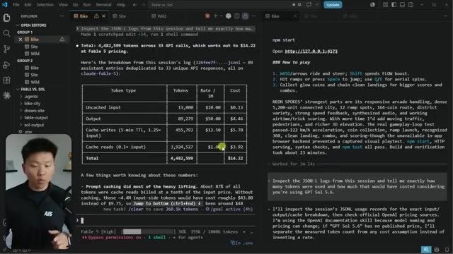
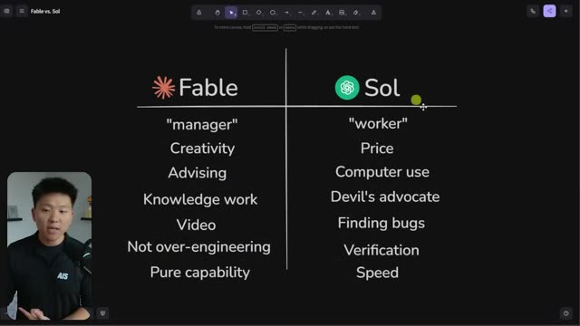
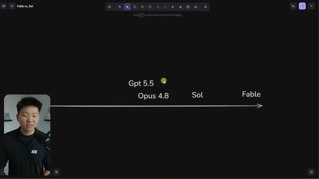

Конспект видео · Nate Herk | AI Automation · 2026-07-10 · 20 мин · 180K просмотров Video digest · Nate Herk | AI Automation · 2026-07-10 · 20 min · 180K views
Я протестировал GPT-5.6 Sol против Fable 5: что нужно знать I tested GPT-5.6 Sol vs Fable 5: what you need to know
Смотреть видео ↗Watch the video ↗
Вместо пересказа бенчмарков — день параллельной работы: слева Claude Code с Fable 5, справа Codex с GPT-5.6 Sol, обоим — одинаковые /goal-промпты, а вечером — вердикт по ощущениям от реальных задач [00:25]. Это самый честный формат сравнения флагманов из доступных: «одно дело смотреть бенчмарки — другое запачкать руки своей ежедневной работой» [19:55]. Instead of benchmark recaps — a day of side-by-side work: Claude Code with Fable 5 on the left, Codex with GPT-5.6 Sol on the right, identical /goal prompts for both, and an evening verdict grounded in real tasks [00:25]. It's the most honest flagship comparison format available: "benchmarks are one thing — getting your hands dirty with your day-to-day work is another" [19:55].
Три слепых теста и ценаThree blind tests and the cost
Браузерная игра про велосипед: победа Fable (полноценный 3D-мир против неудобного вида сверху) при сопоставимом времени — но $14.22 против $4.50, причём Fable выдала 90K output-токенов против 31K у Sol [02:57]. Скролл-сайт: снова победа Fable по вау-эффекту — но $19.24 против чуть более доллара («в 20 раз дешевле — был ли результат Fable в 20 раз лучше? Нет») [05:33]. Пять произвольных визуальных «миров»: единственная победа Sol — разнообразнее идеи, и при этом самый быстрый прогон дня (7 минут против 15) [12:07]. Сквозная закономерность: Sol системно экономнее в токенах (в ~3 раза), а по замерам API у Sol лучше медианная задержка, но разброс больше — Fable стабильнее держится у своих ~20 секунд [16:32]. A browser bike game: Fable wins (a proper 3D world vs an awkward top-down view) at similar build times — but $14.22 vs $4.50, with Fable emitting 90K output tokens to Sol's 31K [02:57]. A scroll-stopping website: Fable again wins on wow factor — at $19.24 vs just over a dollar ("20x cheaper — was Fable's output 20x better? No") [05:33]. Five arbitrary visual "worlds": Sol's only win — more diverse ideas, and the day's fastest run (7 minutes vs 15) [12:07]. The through-line: Sol is systematically ~3x more token-frugal, and on API measurements Sol's median latency is better but variance is wider — Fable consistently hovers around its ~20 seconds [16:32].

Вердикт: Fable — менеджер, Sol — исполнительThe verdict: Fable the manager, Sol the worker
Итоговая доска: Sol лучше в цене, computer use, «адвокате дьявола», поиске багов, верификации и скорости; Fable — в креативности, письме, стратегии, советах и умении не переинженирить (Sol на ultra «пишет тесты и думает без остановки») [17:20]. Формула автора: «Fable — сооснователь и менеджер, Sol — очень хороший исполнитель; Fable, оркестрирующая толпу Sol-агентов, была бы великолепна» [17:00]. По чистой способности разрыв остаётся: «Sol — уровня Opus 4.8, и оценена как Opus; будь она уровня Fable — и стоила бы как Fable» [19:03]. The final board: Sol wins on price, computer use, devil's advocacy, bug-finding, verification and speed; Fable on creativity, writing, strategy, advising and not over-engineering (Sol on ultra "keeps writing tests and thinking forever") [17:20]. The author's formula: "Fable is a co-founder and manager, Sol is a really good worker; Fable orchestrating a fleet of Sol agents would be amazing" [17:00]. On raw capability the gap stands: "Sol is Opus 4.8-tier, and it's priced like Opus; if it were Fable-tier, it would be priced like Fable" [19:03].


Почему это важно: это практическое подтверждение стратегии роутинга, о которой тот же автор говорил всю неделю: дорогая модель — на замысел, дешёвая — на исполнение и верификацию. Свежая вводная — Sol как «работник» теперь конкурирует с Opus по цене при большей токен-экономности, что меняет арифметику мультиагентных прогонов. **Why it matters:** hands-on confirmation of the routing strategy the same author has pushed all week: the expensive model for judgment, the cheap one for execution and verification. The fresh input — Sol as the "worker" now rivals Opus on price with better token frugality, which changes the arithmetic of multi-agent runs.
Конспект построен по субтитрам; кадры извлечены по таймкодам, отобранным из транскрипта. Digest built from subtitles; frames extracted at timestamps picked from the transcript.